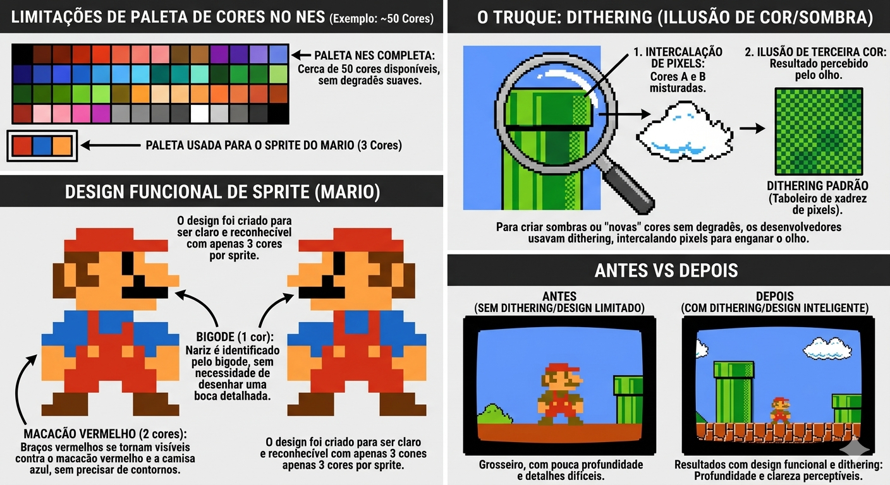
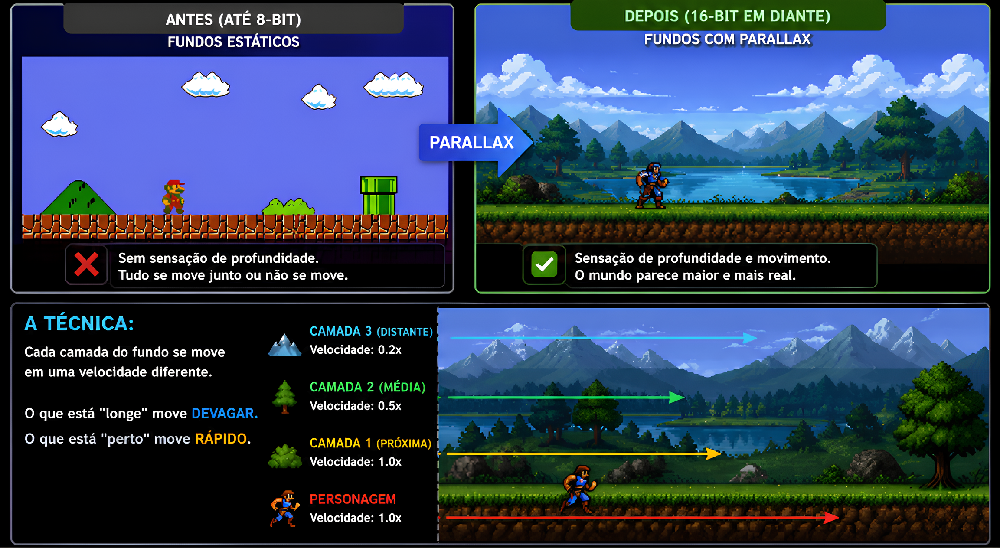
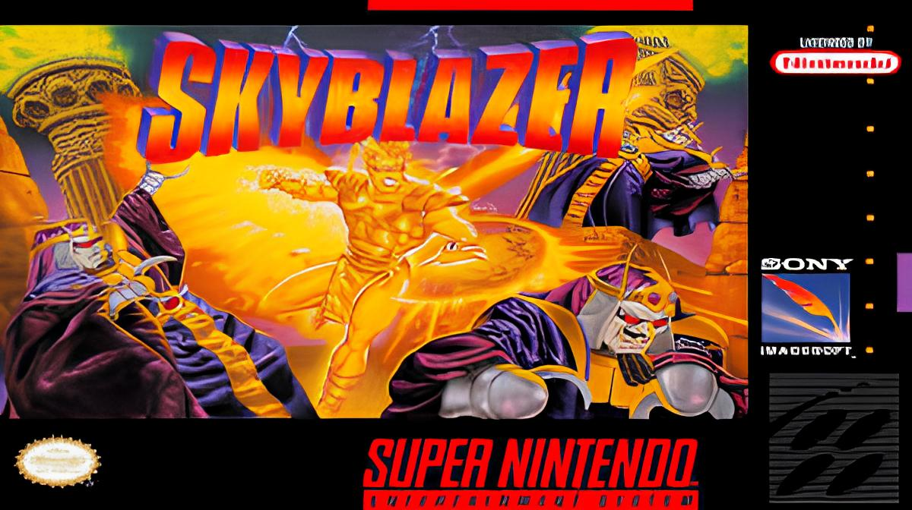
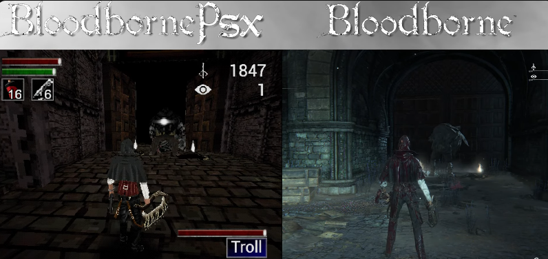
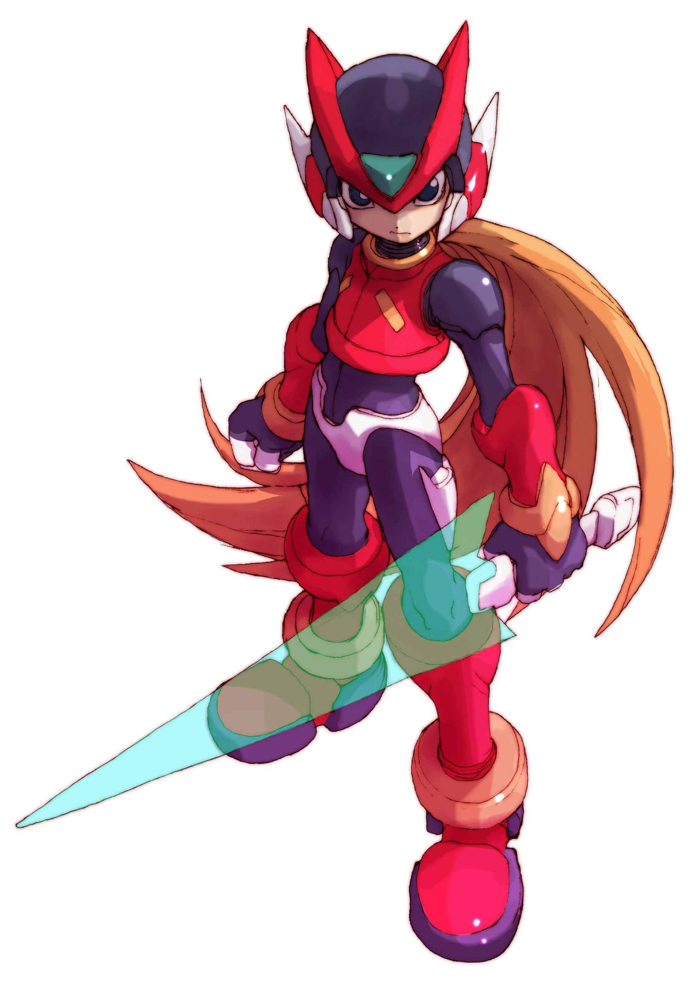

Introdução
O Crash de 1983:
No início dos anos 80, o mercado estava saturado. Qualquer empresa (até marcas de comida) tentava lançar
jogos para o Atari 2600. O resultado foi uma enxurrada de títulos péssimos, culminando no desastroso jogo do
E.T.
O Problema: A perda de confiança do consumidor. As lojas pararam de vender consoles, achando que videogames
eram uma moda passageira que tinha morrido.
A Salvação: A Nintendo lançou o Famicom (NES) com um selo de qualidade ("Nintendo Seal of Quality"),
garantindo que apenas jogos licenciados e testados chegassem ao público, restaurando a credibilidade da
indústria.
Desafio
Cores e Sombras no 8-bit:
As paletas de cores eram muito limitadas (o NES, por exemplo, tinha cerca de 50 cores disponíveis).
Design Funcional: Mario usa um macacão para que seus braços sejam visíveis contra o corpo, e um bigode para
que o nariz seja identificado sem precisar desenhar uma boca detalhada.
O Truque: Como não havia degradê suave, usava-se o dithering (intercalar pixels de duas cores diferentes)
para criar a ilusão de uma terceira cor ou sombra.

O "Pulo do Gato" dos Processadores:
Antigamente, memória não era medida em Gigabytes, mas em Bytes simples. O Atari 2600 tinha apenas 128 bytes
de RAM (isso não dá para uma frase de texto hoje).
A Mágica: Os programadores tinham que "desenhar" o jogo na TV linha por linha, em tempo real, enquanto o
feixe de elétrons do tubo passava.
O Legado: Essa escassez extrema forçou a criação de algoritmos de compressão e lógica de código que são a
base da computação moderna.
Calculadora de Memória
Bytes: 128
Megabytes: 0.000122
Gigabytes: 0.000000119
Decimal: 128
Octal: 200
Hexadecimal: 80
Isso equivale a 1 consoles Atari 2600.
Design
Limitações Criativas (Parallax Scrolling):
Até o início da era 16-bit, os fundos dos jogos eram estáticos. O Parallax mudou tudo.
A Técnica: Consiste em mover as camadas do fundo em velocidades diferentes. O que está "longe" move devagar;
o que está "perto" move rápido.
O Efeito: Isso engana o cérebro humano, criando uma sensação de profundidade 3D em um hardware que só
conseguia processar imagens 2D planas.

Narrativa Silenciosa:
Sem espaço para vídeos (cutscenes) ou diálogos extensos, os jogos usavam o design ambiental.
Exemplo: Em Super Metroid, a solidão e o perigo são transmitidos pela trilha sonora melancólica e pela
arquitetura hostil do planeta Zebes.
Show, don't tell: O jogador aprende a história observando estátuas antigas, naves destruídas e o
comportamento dos inimigos, criando uma imersão muito mais profunda do que textos explicativos.
Curiosidade

Hidden Gems (Pérolas Escondidas):
Com milhares de lançamentos para SNES e Mega Drive, muitos jogos incríveis falharam comercialmente por
falta de marketing ou por saírem no fim da vida do console.
Exemplos clássicos: Skyblazer (SNES) ou The Misadventures of Flink (Mega Drive).
O Valor: Explorar esses jogos mostra que a biblioteca retrô é muito mais profunda do que apenas Mario, Sonic
e Donkey Kong.
Legado
Demakes:
É um movimento artístico moderno onde desenvolvedores recriam jogos atuais usando as limitações técnicas de
consoles antigos.
O Apelo: Ver como a complexidade de um Bloodborne se traduz nos polígonos serrilhados do PS1 evoca uma
nostalgia estética única.
Exercício Mental: Isso prova que uma boa mecânica de jogo é atemporal, independente da contagem de
polígonos.

Cenário de Emulação e Preservação:
Jogos em cartuchos e consoles antigos estragam com o tempo (apodrecimento de trilhas e
capacitores).
Preservação: A emulação em dispositivos como Raspberry Pi ou portáteis chineses (Miyoo Mini, Anbernic) não é
apenas sobre "jogar de graça", mas sobre manter viva a história do software.
A Ética: O debate sobre empresas que não vendem mais seus jogos clássicos, mas processam quem tenta
preservá-los através de ROMs.
Venham testar os seus conhecimentos:

Quantidade de erros:
***